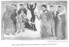

The Kebra Nagast, by E.A.W. Budge, [1922], at sacred-texts.com
79. CONCERNING THE KING OF AMALEK
And it came to pass that when the elder daughter of Lot had brought forth her son, she said unto the younger daughter, "Come now, let us make our father drink wine, so that thou also mayest company with him that, peradventure, thou mayest get offspring." And again they prepared wine, and again they spoke to him the words of foolishness, and said unto him, "Drink wine, O our father, so that thy heart may be comforted"; and he, the simple man, drank and became drunk. And again, when he had drunk and his mind was clouded with wine, the younger daughter came and lay with him, and again he did not know of her lying with him, or of her rising up from him. And she also conceived and gave birth to a son, and she called his name "Ammon," and he is the father of the Amalekites.

Click to enlarge
Plate XIX. Christ casting a devil out of a man in the presence of the Jews and His Apostles
{kind=link}
[paragraph continues] Behold now, it is clear that the King of Amalek is of the seed of Shem.